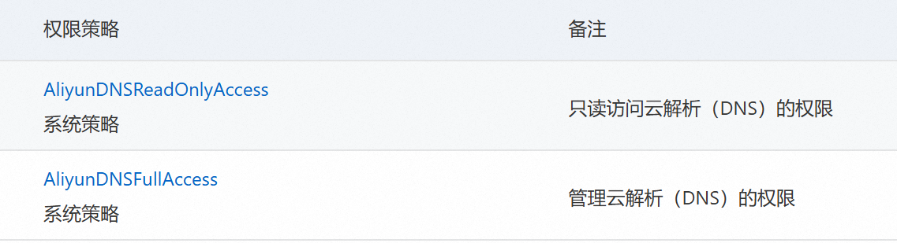

OpenWrt 使用
[toc]
前言
仅在 nanopir5c 上验证过
交叉编译工具链
musl 工具链 https://musl.cc/
历史记录
一般在 /etc/profile.d/busybox-history-file.sh
export HISTCONTROL=ignoreboth:erasedups
安装后扩容
如使用 rk 的包格式，可以在刷写的时候修改 parameter.txt，删除 ,-@0x005c6000(opt:grow)，确保最后一个分区有 :grow
我这个是 overlay 的，我不需要 opt 分区，把他全部合到 overlay 分区
# df -h
Filesystem Size Used Avail Use% Mounted on
tmpfs 512K 0 512K 0% /dev
tmpfs 391M 864K 390M 1% /run
overlay 1.5G 696K 1.4G 1% /
tmpfs 2.0G 5.4M 2.0G 1% /tmp
/dev/mmcblk2p10 26G 24K 25G 1% /opt
# fdisk -l
Device Start End Sectors Size Type
/dev/mmcblk2p1 16384 24575 8192 4M unknown
/dev/mmcblk2p2 24576 32767 8192 4M unknown
/dev/mmcblk2p3 32768 40959 8192 4M unknown
/dev/mmcblk2p4 40960 73727 32768 16M unknown
/dev/mmcblk2p5 73728 155647 81920 40M unknown
/dev/mmcblk2p6 155648 221183 65536 32M unknown
/dev/mmcblk2p7 221184 286719 65536 32M unknown
/dev/mmcblk2p8 286720 2908159 2621440 1.3G unknown
/dev/mmcblk2p9 2908160 6053887 3145728 1.5G unknown
/dev/mmcblk2p10 6053888 60620766 54566879 26G unknown
# parted
GNU Parted 3.6
Using /dev/mmcblk2
Welcome to GNU Parted! Type 'help' to view a list of commands.
(parted) print
Model: MMC A3A551 (sd/mmc)
Disk /dev/mmcblk2: 31.0GB
Sector size (logical/physical): 512B/512B
Partition Table: gpt
Disk Flags:
Number Start End Size File system Name Flags
1 8389kB 12.6MB 4194kB uboot
2 12.6MB 16.8MB 4194kB misc
3 16.8MB 21.0MB 4194kB dtbo
4 21.0MB 37.7MB 16.8MB resource
5 37.7MB 79.7MB 41.9MB kernel
6 79.7MB 113MB 33.6MB boot
7 113MB 147MB 33.6MB recovery
8 147MB 1489MB 1342MB ext4 rootfs
9 1489MB 3100MB 1611MB ext4 userdata
10 3100MB 31.0GB 27.9GB ext4 opt
(parted) rm 10
(parted) resizepart 9
End? [3100MB]? -1
(parted) unit MiB
(parted) print
Model: MMC A3A551 (sd/mmc)
Disk /dev/mmcblk2: 29600MiB
Sector size (logical/physical): 512B/512B
Partition Table: gpt
Disk Flags:
Number Start End Size File system Name Flags
1 8.00MiB 12.0MiB 4.00MiB uboot
2 12.0MiB 16.0MiB 4.00MiB misc
3 16.0MiB 20.0MiB 4.00MiB dtbo
4 20.0MiB 36.0MiB 16.0MiB resource
5 36.0MiB 76.0MiB 40.0MiB kernel
6 76.0MiB 108MiB 32.0MiB boot
7 108MiB 140MiB 32.0MiB recovery
8 140MiB 1420MiB 1280MiB ext4 rootfs
9 1420MiB 29600MiB 28180MiB ext4 userdata
(parted) quit
resize2fs /dev/mmcblk2p9 # 有一次可以，但是其他情况都不行
参考 friendly 文档
# 相对于上面parted打印的大小预留了2M才成功
echo "overlayfs=enable userdata=28178" > /.init_wipedata
reboot
参考 openwrt 官方文档
我的反正没成功，先写在这
opkg install parted losetup resize2fs blkid # 25.12前
apk add parted losetup resize2fs blkid # 25.12后
wget -O expand-root.sh "https://openwrt.org/_export/code/docs/guide-user/advanced/expand_root?codeblock=0"
sh ./expand-root.sh
sh /etc/uci-defaults/70-rootpt-resize
ipv6
ipv6 需要开启防火墙 wan 的 546 udp 入站
如果需要配置多个隔离的 lan 口的话，IPv6 分配长度至少设置为运营商分配 PD 前缀 +4，同时每个 lan 口设置不同的 ipv6 前缀，这样子在 ipv6 层面才是划分为不同的子网，不然仅会有一个 lan 口能获取到 ipv6 地址
第三方源
src/gz dllkids https://op.dllkids.xyz/packages/aarch64_generic/
src/gz openwrt_kiddin9 https://dl.openwrt.ai/latest/packages/aarch64_generic/kiddin9
由于这两个源都没有切换到 apk, 25.12以后的版本可以看后文自行编译
魔法
HelloWorld 的包名叫 luci-app-ssr-plus
自行编译组件
安装编译环境
参考 https://openwrt.org/docs/guide-developer/toolchain/install-buildsystem
以 Ubuntu 为例
apt install build-essential git gawk rsync unzip \
libncurses-dev swig python3-dev python3-setuptools \
python3-pyelftools curl
下载 SDK
https://downloads.openwrt.org/releases/
我的是 25.12 的 nanopi-r5c 下载链接为 https://downloads.openwrt.org/releases/25.12.3/targets/rockchip/armv8/openwrt-sdk-25.12.3-rockchip-armv8_gcc-14.3.0_musl.Linux-x86_64.tar.zst
添加第三方软件
rm -rf package/helloworld
git clone --depth=1 https://github.com/fw876/helloworld.git package/helloworld
rm -rf package/openclash
git clone --depth=1 https://github.com/vernesong/OpenClash.git package/openclash
rm -rf package/passwall-packages
git clone --depth=1 https://github.com/Openwrt-Passwall/openwrt-passwall-packages.git package/passwall-packages
rm -rf package/passwall
git clone --depth=1 https://github.com/Openwrt-Passwall/openwrt-passwall.git package/passwall
rm -rf package/passwall2
git clone --depth=1 https://github.com/Openwrt-Passwall/openwrt-passwall2.git package/passwall2
编译
更新 feeds
./scripts/feeds update -a
./scripts/feeds install -a
配置
make menuconfig
Global Build Settings 取消勾选好几个 “Select all xxx”, 不然会勾选所有包，编译巨慢
LuCI > 2. Modules > Translations 中勾选 Simplified Chinese，不然没有中文包
LuCI > 3. Applications 中勾选并配置自己添加的包
编译
make defconfig # 自动勾选依赖
make package/luci-app-ssr-plus/compile package/luci-app-openclash/compile package/luci-app-passwall/compile package/luci-app-passwall2/compile -j $(nproc)
做成本地 apk 源
不用单独每个包签名，只签名索引文件也是可以正常使用 apk add 安装的
生成索引
方法1 使用构建脚本
make package/index
方法2 手动生成签名索引
适合把包全部拷贝在一起，手动生成一个完整的索引
for feed in base luci packages; do
./staging_dir/host/bin/apk mkndx --allow-untrusted --sign-key private-key.pem -o bin/packages/aarch64_generic/$feed/packages.adb bin/packages/aarch64_generic/$feed/*
done
部署
将公钥 public-key.pem 改名后放在 /etc/apk/keys 目录下，注意文件名别和已有的相同
将生成索引的目录拷贝到路由器上，我这里是放在 /data/packages 目录下了
添加到本地源
for feed in base luci packages; do
echo "file://data/packages/$feed/packages.adb" >> /etc/apk/repositories.d/local.list
done
DDNS
开机自启
将 /etc/init.d/ddns 中 boot 函数删除，或者在 boot 中调用 start 函数
阿里云
获取 AccessKey
打开 RAM 访问控制 https://ram.console.aliyun.com/overview
点击左侧 用户 -> 创建用户
创建用户时，勾选 “OpenAPI 调用访问”，记住 AccessKey，一次性的，页面关闭后就找不到了，一定要记住
创建完成后授予如下两个权限

配置阿里云解析
https://github.com/renndong/ddns-scripts-aliyun
现在官方支持阿里云了，可以直接安装 ddns-scripts-aliyun
Docker
Config
OpenWrt docker 默认用的配置文件是 /tmp/dockerd/daemon.json，/tmp 目录是在内存中，修改重启路由器后就失效
该配置文件是 /etc/init.d/dockerd 根据 /etc/config/dockerd 自动生成的，需要关闭 iptables，不然映射的端口局域网内也无法访问
config globals 'globals'
option data_root '/opt/docker/'
option log_level 'warn'
option iptables '0'
option auto_start '1'
list registry_mirrors 'https://mirror.xxxx.com'
Storage Driver
https://docs.docker.com/storage/storagedriver/select-storage-driver/
默认 Storage Driver 是 vfs，这玩意有个大坑，每一层镜像都会全量保存，而不是增量保存，就会特别占用磁盘空间，在 /etc/init.d/dockerd 里面看了一下读取配置的代码，并不能设置 Storage Driver，我的做法是直接在 /etc/init.d/dockerd 内部启动 dockerd 的时候直接加参数 --storage-driver=fuse-overlayfs，这个需要安装 fuse-overlayfs 包
如果 docker 的目录是挂载的其他分区，如ext4，推荐使用 overlay2
附录
安装 ipk 包
慎重！！不保证能用
#!/bin/sh
# 检查参数
if [ -z "$1" ]; then
echo "❌ 错误: 请指定要安装的 .ipk 文件！"
echo "用法: $0 <文件名.ipk>"
exit 1
fi
IPK_FILE="$1"
# 检查文件是否存在
if [ ! -f "$IPK_FILE" ]; then
echo "❌ 错误: 找不到文件 $IPK_FILE"
exit 1
fi
echo "🚀 开始分析并手动安装: $IPK_FILE"
# 创建临时工作目录
WORK_DIR="/tmp/ipk_extract_$(date +%s)"
mkdir -p "$WORK_DIR"
cd "$WORK_DIR" || exit 1
# 1. 解压 IPK 外壳
echo "📦 正在解压 IPK 外壳..."
tar -zxf "../$IPK_FILE" 2>/dev/null || tar -xf "../$IPK_FILE" 2>/dev/null
if [ ! -f "control.tar.gz" ] || [ ! -f "data.tar.gz" ]; then
echo "❌ 错误: 无效的 IPK 格式，未找到 control 或 data 压缩包。"
rm -rf "$WORK_DIR"
exit 1
fi
# 2. 解压控制信息
echo "⚙️ 正在解析控制信息..."
mkdir -p control
tar -zxf control.tar.gz -C control/ 2>/dev/null || tar -xf control.tar.gz -C control/ 2>/dev/null
# 🔍 获取 Package 名字作为存储目录名
PKG_NAME=$(grep "^Package:" control/control | head -n1 | awk '{print $2}')
if [ -z "$PKG_NAME" ]; then
PKG_NAME=$(basename "$IPK_FILE" .ipk)
fi
echo "📦 识别到软件包名称: $PKG_NAME"
# 创建本地卸载备份目录
RECORD_DIR="/usr/share/ipk/$PKG_NAME"
mkdir -p "$RECORD_DIR"
# 处理依赖
if [ -f "control/control" ]; then
DEPENDS=$(grep "^Depends:" control/control | sed 's/^Depends://g' | sed 's/([^)]*)//g' | tr ',' ' ')
if [ -n "$DEPENDS" ]; then
echo "📡 正在处理依赖过滤与自动安装..."
for dep in $DEPENDS; do
case "$dep" in
kmod-*) echo "⚠️ [跳过内核模块] -> $dep"; continue ;;
esac
if [ "$dep" = "kernel" ] || [ "$dep" = "libc" ] || [ "$dep" = "libgcc" ]; then
echo "⚠️ [跳过系统基础包] -> $dep"; continue
fi
echo "👉 正在安装依赖: $dep ..."
apk add "$dep" 2>/dev/null
if [ $? -eq 0 ]; then echo " ✅ $dep 安装成功"; else echo " ❌ $dep 安装失败"; fi
done
fi
fi
# 3. 执行预安装脚本
if [ -f "control/preinst" ]; then
echo "▶️ 正在执行预安装脚本 (preinst)..."
chmod +x control/preinst
(cd control && ./preinst)
fi
# 4. 解压并生成文件列表，随后拷贝
echo "🚚 正在解析并复制程序文件..."
mkdir -p data
tar -zxf data.tar.gz -C data/ 2>/dev/null || tar -xf data.tar.gz -C data/ 2>/dev/null
if [ -d "data" ] && [ "$(ls -A data)" ]; then
# 🔍 生成完整的文件绝对路径列表（排除目录自身，只记录文件和软链接）
(cd data && find . ! -type d | sed 's|^\.||') > "$RECORD_DIR/files"
# 执行拷贝
cp -af data/* / 2>/dev/null
echo "✅ 文件复制完成。"
else
echo "ℹ️ 数据包为空，无文件需要复制。"
touch "$RECORD_DIR/files"
fi
# 5. 处理安装后脚本
if [ -f "control/postinst" ]; then
echo "▶️ 正在执行安装后脚本 (postinst)..."
chmod +x control/postinst
(cd control && ./postinst)
fi
# 6. 备份卸载相关的脚本 (prerm 和 postrm)
[ -f "control/prerm" ] && cp -f control/prerm "$RECORD_DIR/prerm" && chmod +x "$RECORD_DIR/prerm"
[ -f "control/postrm" ] && cp -f control/postrm "$RECORD_DIR/postrm" && chmod +x "$RECORD_DIR/postrm"
# 7. 🛠️ 核心进化：自动生成该组件的一键卸载脚本
cat << 'EOF' > "$RECORD_DIR/uninstall.sh"
#!/bin/sh
LOCAL_DIR=$(dirname "$0")
PKG=$(basename "$LOCAL_DIR")
echo "🗑️ 正在启动卸载流程: $PKG ..."
# A. 执行卸载前脚本
if [ -f "$LOCAL_DIR/prerm" ]; then
echo "▶️ 正在执行卸载前脚本 (prerm)..."
(cd "$LOCAL_DIR" && ./prerm)
fi
# B. 根据记录删除所有释放的文件
if [ -f "$LOCAL_DIR/files" ]; then
echo "❌ 正在移除安装的文件..."
while IFS= read -r file; do
if [ -n "$file" ] && [ -f "$file" ] || [ -L "$file" ]; then
rm -f "$file"
echo " 已删除: $file"
fi
done < "$LOCAL_DIR/files"
fi
# C. 执行卸载后脚本
if [ -f "$LOCAL_DIR/postrm" ]; then
echo "▶️ 正在执行卸载后脚本 (postrm)..."
(cd "$LOCAL_DIR" && ./postrm)
fi
# D. 深度清理空目录，防止残留空文件夹
if [ -f "$LOCAL_DIR/files" ]; then
while IFS= read -r file; do
if [ -n "$file" ]; then
dir=$(dirname "$file")
# 循环向上尝试删除空目录，直到根目录或非空目录
while [ "$dir" != "/" ] && [ "$dir" != "." ]; do
rmdir "$dir" 2>/dev/null && echo " 已清理空目录: $dir" || break
dir=$(dirname "$dir")
Vigil
fi
done < "$LOCAL_DIR/files"
fi
# E. 自毁卸载底包目录
echo "🧹 清理卸载备份记录..."
rm -rf "$LOCAL_DIR"
echo "🎉 $PKG 卸载完成！"
EOF
chmod +x "$RECORD_DIR/uninstall.sh"
# 8. 清理临时文件
echo "🧹 正在清理临时文件..."
cd /tmp
rm -rf "$WORK_DIR"
echo "🎉 安装流程执行完毕！"
echo "ℹ️ 卸载信息已存至: $RECORD_DIR"
echo "💡 如需完全卸载此插件，只需执行: $RECORD_DIR/uninstall.sh"
由于个人水平有限，文中若有不合理或不正确的地方欢迎指出改正